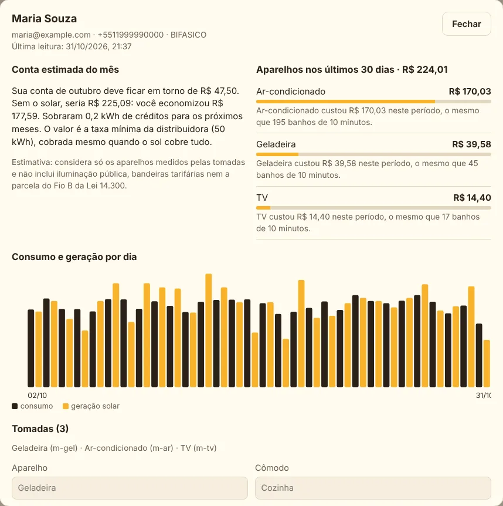
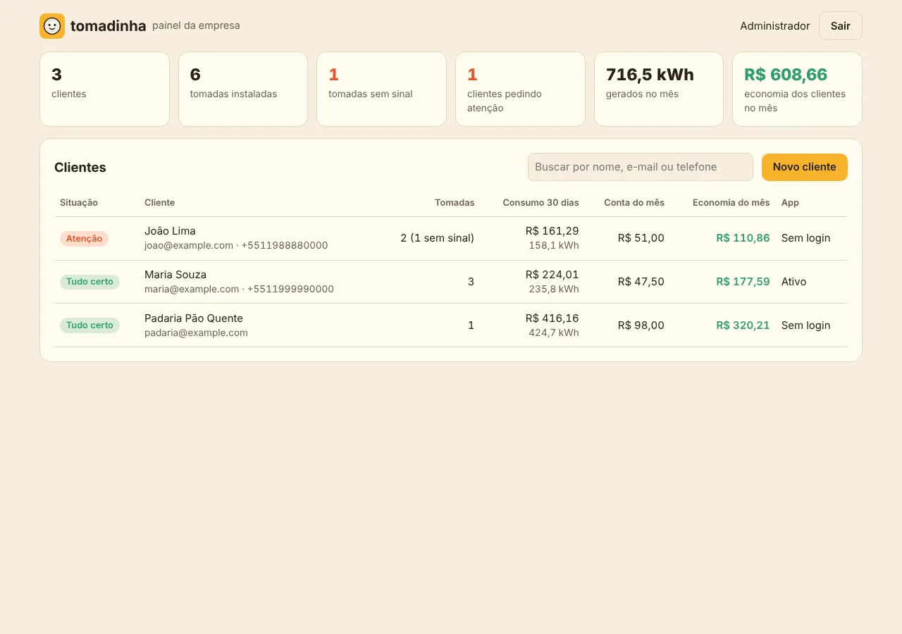

R$
Quanto cada aparelho gasta
Ranking da casa em reais e kWh, com frases simples como “o mesmo que 40 banhos de 10 minutos” e o horário de pico do consumo.
O que vem por aí
O app que mostra, em reais e em linguagem simples, quanto cada aparelho da casa gasta, compara com o que as placas geram e avisa antes do problema. Para clientes de energia solar e para as empresas que cuidam deles.
Um produto da Silo Tecnologia

Para quem tem solar em casa
Tomadas inteligentes medem cada aparelho, o inversor informa a geração e a Tomadinha traduz tudo em dinheiro e em comparações do dia a dia.
Ranking da casa em reais e kWh, com frases simples como “o mesmo que 40 banhos de 10 minutos” e o horário de pico do consumo.
Estimativa da próxima conta, com Fio B da Lei 14.300, bandeira, impostos e créditos. Tire uma foto da conta e a Tomadinha confere se está certa.
Tomada sem sinal, aparelho fora do padrão, placa suja, inversor parado, bandeira vermelha e calor forte. Por push, WhatsApp e e-mail.
Meta de gasto com projeção no ritmo atual, dicas por aparelho, gasto em stand-by, conquistas do mascote e ranking anônimo entre vizinhos.
Ligue e programe as tomadas pelo app. A Tomadinha pode ligar sozinha a máquina de lavar ou o carregador do carro quando sobra energia solar.
Assistente no app, chatbot no WhatsApp e Alexa: “quanto gastei este mês?” ou “desliga o ar do quarto”. Também tem widget, relatório mensal em PDF e acesso para a família.
TomadinhaA TV da sala gasta R$ 6 por mês só em stand-by. Que tal desligar da tomada?
Para a empresa solar

Do primeiro contato à usina ligada
Além do acompanhamento do cliente, a Tomadinha ajuda a vender, instalar e operar usinas compartilhadas.
Simulador com o telhado no mapa, proposta pronta a partir da foto da conta de luz, aceite eletrônico, funil com follow-up automático, vendedores com comissão, comparador de propostas concorrentes e financiamento com parceiros.
Lista de materiais, cotação do kit com distribuidores, documentos e homologação na distribuidora, obra acompanhada pelo cliente no app e entrega com testes e assinatura eletrônica.
Adesão online com fila de espera, conferência dos créditos de cada assinante, rebalanceamento das cotas, links para investidores e agenda de limpeza e manutenção da usina.
Como vai funcionar
Tomadas inteligentes (Shelly) nos aparelhos que mais pesam e, se quiser, um medidor da casa inteira. Basta ler o QR code.
Leituras das tomadas, geração do inversor e o clima do dia viram consumo em reais, geração esperada e alertas.
App para Android e iOS, avisos automáticos e privacidade de acordo com a LGPD: consentimento por canal, exportação e exclusão dos dados.
Estamos preparando o lançamento. Deixe seu contato e avisamos assim que estiver disponível, com condições para as primeiras empresas.
Recursos e nomes podem mudar até o lançamento.